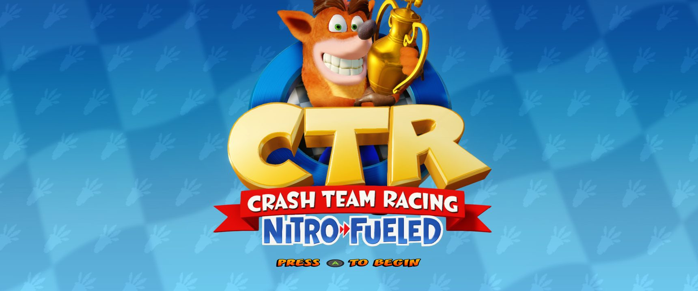
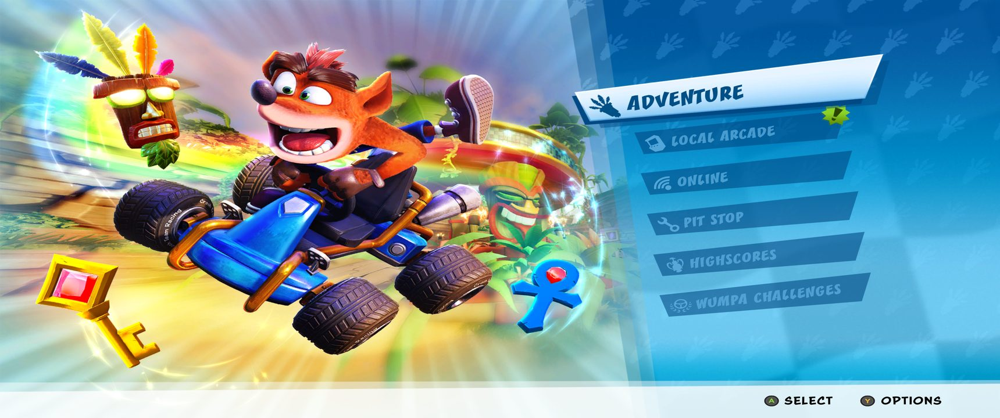
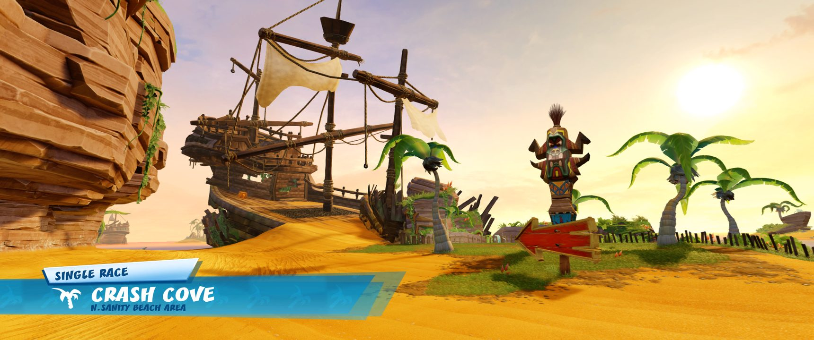
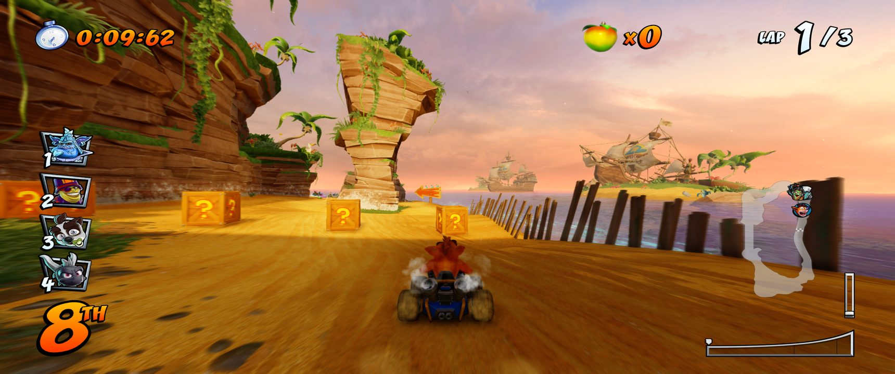
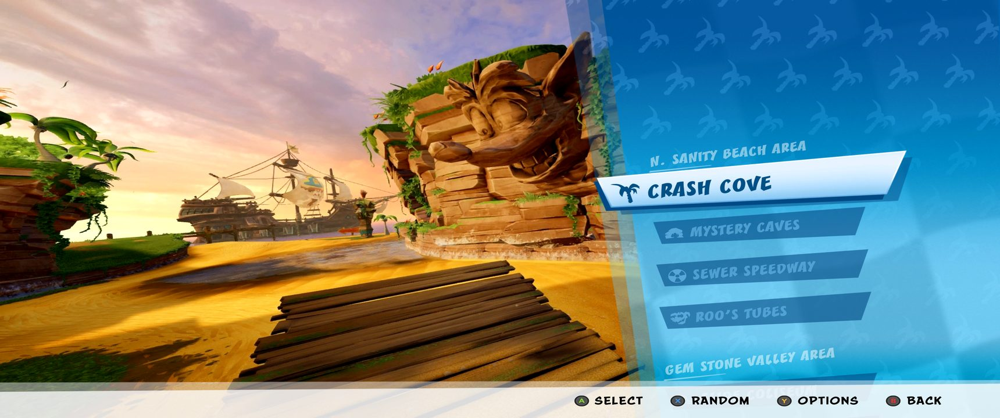

Which copy do you have?
- European copy CUSA14876 Bought in Europe (PAL). The edition this project is made for: everything here was developed and tested on it.
- US copy CUSA13795 Bought in the Americas. Runs with the same download; the original project was made for it.
Not sure? Look in your dumped game folder: sce_sys/param.sfo names the title ID, and dumps are usually named after it (CUSA14876 or CUSA13795). The launcher also tells you which one it found.
Screenshots at 3440x1440










Credits
A fork of Ryu7w7's OCTR-NitroFueled-PC, built on SacredFire. The game's code runs directly on the CPU, a small runtime replaces the PS4 system libraries, and a renderer derived from shadPS4 draws with Vulkan. No emulator.
Button icons: Xelu's Free Controller Prompts by Those Awesome Guys (CC0).